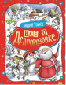

Все о Дедморозовке

Далеко на севере, где-то в Архангельской или Вологодской области, есть небольшая деревня Дедморозовка, в которой живут Дед Мороз и его внучка Снегурочка. А еще там живут помощники Деда Мороза - снеговики и снеговички. Придумал эту деревню замечательный детский писатель Андрей Усачев, великолепный детский художник-иллюстратор Виктор Чижиков нарисовал жителей Дедморозовки, а талантливые художницы Екатерина и Елена Здорновы помогли Виктору Чижикову создать рисунки к книге. В эту книгу вошли все сказочные истории о Дедморозовке и ее жителях.